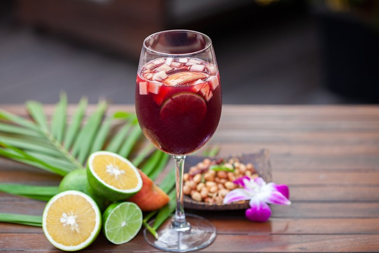

Sangría

Descripción
Aquí aprenderás a hacer la mejor bebida del verano.
¡Para disfrutarla en casa como si estuvieses en una terraza!
Ingredientes
- 750 ml. de vino tinto
- 1 limón en rodajas
- 50 ml. de brandy o coñac
- 1 cucharada de azúcar
- 1 lata de gaseosa o refresco (de limón o naranja)
¿Cómo se hace?
- Lo primero de todo es preparar la fruta. Lavamos y cortamos en rodajas, en nuestro caso nos gusta así, aunque puedes encontrar la fruta también en dados. Reservamos.
- La vamos a preparar en una jarra grande, mejor de litro y medio, pero podéis adaptar los ingredientes al recipiente que vayamos a emplear. Cubrimos la jarra con la mitad de hielo. Añadimos un poquito de cada fruta, al gusto de cada casa.
- Es hora de darle potencia a nuestra sangría, 50 ml. de coñac o brandy, 50 ml. de vermut rojo, 20 ml. de ginebra y el azúcar (en nuestro caso un almíbar ya comprado, pero que también podéis hacer en casa). Removemos bien para mezclar todo el líquido con el hielo y la fruta.
- Echamos el vino, volvemos a remover. Incorporamos la gaseosa o vuestro refresco cítrico favorito y dejamos 3-4 minutos para servir bien fría. El toque de carbónico de la gaseosa (a ser posible bien fría) le da un punto refrescante delicioso y siempre se echa al final de la preparación, justo antes de servir. Así va a conservar todo su gas.
Volver a la página principal